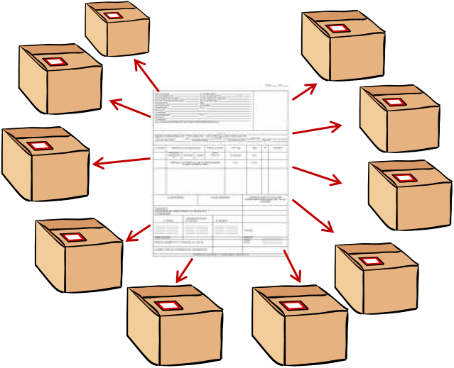

CLASES LLENADO DE PEDIMENTOS
ASOCIACION DE AGENTES ADUANALES DE LAZARO CARDENAS
Tec. Antonio Xoyoc Becerra Farias
Front-End Developer
Experiencia 10 años en la AAALAC
mas de 15 años en el medio aduanero
TEMAS
- Repaso de ANEXO 22
- Historia
- Regímenes Aduaneros
- Tipos de pedimentos
HISTORIA
El Convenio de Kyoto Revisado (CKR) es el principal convenio de facilitación del comercio aduanero. Fue elaborado por la Organización Mundial de Aduanas y entró en vigor el 3 de febrero de 2006. Es una revisión y actualización del Convenio Internacional sobre la Simplificación y la Armonización de Procedimientos Aduaneros que fue adoptado en 1973-1974. El CKR busca facilitar el comercio armonizando y simplificando los procedimientos y las prácticas aduaneras. Para lograrlo, el Convenio proporciona estándares y prácticas recomendadas para los procedimientos y técnicas aduaneras modernas.
Los países que deseen convertirse en partes contratantes de este convenio internacional, deben aceptar el Cuerpo y el Anexo General del CKR, que son vinculantes.
El Anexo General del CKR compromete a las partes contratantes a los siguientes principios fundamentales:
- transparencia y previsibilidad de las acciones que realiza la Aduana,
- estandarización y simplificación de la declaración de mercancías y los documentos de soporte,
El Anexo General del CKR compromete a las partes contratantes a los siguientes principios fundamentales:
- procedimientos simplificados para los operadores autorizados,
- máxima utilización de la tecnología de la información,
- mínimos controles aduaneros necesarios para garantizar el cumplimiento con las reglamentaciones,
- uso de la administración de riesgos y controles por auditoria,
- intervenciones coordinadas con otras entidades fronterizas, y
- colaboración con el sector comercial
El Secretario General de la OMA es el depositario del Convenio. Los países deben depositar su instrumento de adhesión o ratificación con el Secretario General del Consejo. El Convenio es administrado por el Comité de Administración del CKR cuyos miembros son las partes contratantes. Solo las partes contratantes tienen derecho a voto, pero todos los demás pueden participar como observadores.
Regímenes Aduaneros
Todas las mercancías que ingresen o que salen de México deben destinarse a un régimen aduanero, establecido por el contribuyente, de acuerdo con la función que se le va a dar en territorio nacional o en el extranjero.
Cuando una mercancía es presentada en la aduana para su ingreso o salida del país, se debe informar en un documento oficial (pedimento) el destino que se pretende dar a dicha mercancía.
Fundamento Ley Aduanera articulo 90
Las mercancías que se introduzcan al territorio nacional o se extraigan del mismo, podrán ser destinadas a alguno de los regímenes aduaneros siguientes:
- Definitivos. Art. 95
- Temporales Art. 104 y 105
- Depósito Fiscal Art. 119, 120, 121, 122 y 123
- Tránsito de mercancías Art. 124
- Elaboración, transformación o reparación en recinto fiscalizado Art. 135
- Recinto fiscalizado estratégico Art. 135A, B, C y D
Regímen Definitivos
- De importación Art. 96, 97 y 101
- De exportación Art. 102 y 103
Regímen Temporales
- De importación
- Para retornar al extranjero en el mismo estado Art. 106 y 107
- Para elaboración, transformación o reparación en programas de maquila o de exportación Art. 108, 109, 110, 111 y 112
- De exportación
- Para retornar al extranjero en el mismo estado Art. 115 y 116
- Para elaboración, transformación o reparación Art. 114, 117 y 118
Regímen Tránsito
- Interno Art. 125, 126, 127, 128 y 129
- Internacional Art. 130, 131, 132 y 133
Tipos de pedimentos
- Pedimento Dinamico
- Completo
- Simplificado
- Pedimento Consolidado Art. 37
- Parte II RGCE 3.1.18
Pedimento Consolidado
Es un sólo pedimento que ampara diversas operaciones de un solo exportador.
Pedimento Consolidado
Parte II
Aplica para embarques que se introduce al país en más de un vehículo, amparadas con un solo pedimento y las partes II que procedan según el volumen.
Parte II

Parte II
Aplica para las siguientes mercancías:
- Operaciones de mercancías transportadas por ferrocarril.
- Maquinas desmontadas o sin montar.
- Animales vivos.
- Mercancías a granel.
- Láminas y tubos metálicos y alambre en rollo.
- Operaciones efectuadas por la industria automotriz terminal o manufacturera de vehículos autotransporte.
Contribuciones de comercio exterior
- Valor en Dolares = Valor mercancía + Incrementables
- Valor en Aduana = Valor Dolares * Tipo de Cambio
- DTA se calcula 8 al millar
- 8 / 1000 = .008
- DTA = Valor Aduana * .008
Contribuciones de comercio exterior
- IGI = Valor en Aduana * arancel
- IVA = (Valor en Aduana + DTA + IGI) * Tasa de IVA
SAAI M3
Sistema de Automatización Aduanera Integral
Esta comunicación se da a través del intercambio de archivos entre los equipos de computo de ambas partes. Inicialmente, los agentes y apoderados aduanales le envían a la aduana un conjunto de archivos que contienen información de los pedimentos y tránsitos que pretenden tramitar. Después de una etapa de validación, la autoridad les envía en respuesta un segundo conjunto de archivos informándoles de los pedimentos y tránsitos aprobados y de los errores encontrados.